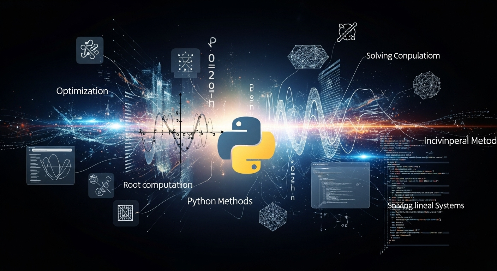

Bienvenidos al Curso de Métodos Numéricos con Python!
Este curso conecta la teoría matemática con la práctica de la programación para resolver problemas de índole matemático que son demasiado complejos o imposibles de abordar con soluciones analíticas (exactas) y la computación numérica se convierte en una herramienta esencial para encontrar soluciones aproximadas a estos problemas.
El objetivo del curso consiste en describir y analizar algoritmos numéricos que permitan resolver problemas matemáticos con una precisión determinada. Identificar el tipo de problemas que requieren técnicas numéricas para su resolución. Analizar la propagación del error que pueden ocurrir cuando se aplican métodos numéricos, y aproximar con precisión las soluciones a algunos problemas que no pueden ser resueltos exactamente.
Al finalizar este curso, serás capaz de:
Para este curso se requiere que el estudiante posea niveles básicos de Programación y Algoritmos, para escribir código funcional, y manejo de elementos matemáticos vistos en Cálculo Diferencial e Integral y Álgebra Lineal.
En esta sección encontrarás un enlace directo a las distintas unidades que cubren el contenido de la materia.
| Unidad | Tema Principal | Enlace Rápido |
|---|---|---|
| Unidad 1 | Teoría de Errores | Ir a Unidad 1 |
| Unidad 2 | Algebra Lineal Numèrica | Ir a Unidad 2 |
| Unidad 3 | Soluciòn de Ecuaciones no Lineales | Ir a Unidad 3 |
| Unidad 4 | Ajuste de curvas | Ir a Unidad 4 |
| Unidad 5 | Diferenciación e Integración Numérica | Ir a Unidad 5 |
| Unidad 6 | Soluciòn de Ecuaciones Diferenciales Ordinarias | Ir a Unidad 6 |
La evaluación del curso estará compuesta por examenes parciales, pruebas cortas y proyectos:
Asegúrate de tener instalado el siguiente software:
Última actualización: 09 de noviembre, 2025